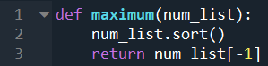

אלגנטי מאוד, יפה! 
לייק 1
אם כבר כולם מפרסמים, זה הפתרון שכתבתי לפני שפרסמתי
def maximum(l):
if len(l) == 1:
return l[0]
next_max = maximum(l[1:])
if l[0] > next_max:
return l[0]
return next_max
6 לייקים
פתרון נוסף:
def maximum(list_of_numbers):
if len(list_of_numbers) == 1:
return list_of_numbers[0]
if list_of_numbers[0] > list_of_numbers[len(list_of_numbers) - 1]:
return maximum(list_of_numbers[:-1])
return maximum(list_of_numbers[1:])
לייק 1
הפתרון שלי אשמח להערות:
def maximum(l):
if len(l) > 1:
if l[0] > l[1]:
l[1] = l[0]
return maximum(l[1:])
return l[0]
l = [0,6,3,4]
print(maximum(l))
עריכה אחרי הערה @itamaraviv:
def maximum(l):
if len(l) < 2:
return l[0]
elif l[0] > l[1]:
l[1] = l[0]
return maximum(l[1:])
אני חייב להודות שאני מרגיש שזה פחות קריא לי מהראשון
אבל אולי סתם כי התחברתי לראשון ברמה הרגשית 
לייק 1
תנסה להפוך את התנאי ככה שאם יש רק איבר אחד תעשה משהו נקודתי
def maximum(l):
if len(l) == 1:
return l[0]
temp_max = maximum(l[1:])
if temp_max > l[0]:
return temp_max
else:
return l[0]
2 לייקים
תעיף את כל ה-elif ותחזיר את המקסימום מבין מה שחוזר מהפונקציה ו-l[0]
def maximum(numbers):
if len(numbers) == 0:
print("Empty list")
return
elif len(numbers) == 1:
return numbers.pop()
num = numbers.pop()
rest = maximum(numbers)
if num > rest:
return num
else:
return rest
def maximum(num_li):
if len(num_li) < 2:
return num_li[0]
else:
if num_li[0] > num_li[1]:
num_li.pop(1)
else:
num_li.pop(0)
return maximum(num_li)יפה @lsperling, @ombental!
שימו לב ששניכם משנים את הרשימה המקורית וזה לא הכי מנומס:
l = [3, 2, 1]
print(maximum(l))
print(l)
3
[3]
def maximum(numbers_list):
numbers_list_copy = numbers_list.copy()
if len(numbers_list_copy) == 1:
return numbers_list_copy[0]
if numbers_list_copy[0] >= numbers_list_copy[1]:
numbers_list_copy.remove(numbers_list_copy[1])
max_number = maximum(numbers_list_copy)
else:
numbers_list_copy.remove(numbers_list_copy[0])
max_number = maximum(numbers_list_copy)
return max_number
לייק 1
פתרתי עם ה-sort ואז כבר ראיתי פה את התשובה השנייה. 
יש מצב במציאות שמשתמשים בשיטה הזאת במקום בלולאות?(סתם מתוך סקרנות  )
)

במציאות? לא, לולאות פחות יקר
לייק 1
האמת שזה מפתיע
תוכל לפרט למה?
2 לייקים
בערך 
חסרה לנו קצת שפה משותפת בשביל זה לצערי (אבל נפתור את זה בשבועות האחרונים של הקורס).
תוכל לקרוא מאמר שתרגמתי שנקרא מבוא עדין לניתוח סיבוכיות של אלגוריתמים, וזה יתן לך תחושה טובה של למה.
בגדול: אם נבצע בלולאה פשוטה, במקרה הגרוע ביותר, נצטרך להסתכל על כל איבר פעם אחת כדי להחליט מה המקסימום ברשימה, מה שיצור לנו n פעולות (n הוא כמות האיברים).
אם נבצע מיון, נצטרך במקרה הגרוע ביותר לבצע n * log(n) פעולות.
6 לייקים
רק לוודא שהבנתי נכון - בהרצת הבדיקה התוצאה תקינה כשהיא לא מחזירה כלום נכון?
נכון
אני דחפתי שם פרינטים כדי להוכיח לעצמי שהכל רץ אבל אין בזה צורך באמת.
def maximum(num_list):
if len(num_list) == 1:
return num_list[0]
if num_list[-1] < num_list[-2]:
num_list.pop()
else:
num_list.pop(-2)
return maximum(num_list)
לייק 1
{kind=link}
שים לב שאתה משנה הרשימה המקורית וזה לא הכי מנומס:
l = [3, 2, 1]
print(maximum(l))
print(l)
3
[3]
לייק 1